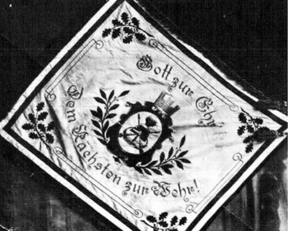
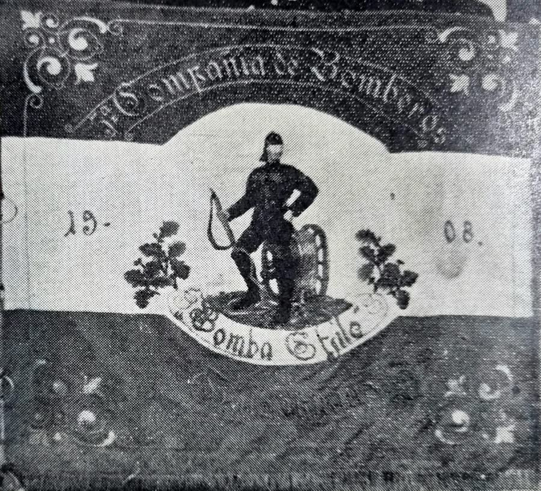

El 6 de septiembre de 2025, después de más de 114 años de servicio, el Estandarte de Fundación pasó a descansar como patrimonio de la Quinta, y en su lugar entró en servicio el estandarte «Fundadores». Estas son las palabras de esa ceremonia.
Un estandarte, como al que hoy damos digno descanso, no es solo una tela bordada ni color ceremonial. Es el reflejo silencioso de generaciones de hombres que, sin pedir nada a cambio, lo siguieron, combatiendo al fuego, al humo, al agua, a los fierros retorcidos y al dolor, guiados únicamente por el lema que orgullosamente ostenta:
«Gott zur Ehr, dem Nächsten zur Wehr»
«Honor a Dios, ayuda al prójimo»
Fabricado en la ciudad de Hamburgo, Alemania, nos acompaña desde el 30 de abril de 1911, día en que, en una ceremonia similar a esta, fue bautizado junto con la primera máquina con que contó la Quinta Compañía, una bomba a vapor denominada «Bomba Chile».


Su simbología
Nuestros estandartes están históricamente asociados a la bandera del Imperio alemán (1871–1918), y sus colores representan los siguientes valores:
- Negro: firmeza, disciplina y determinación.
- Blanco: paz y vocación de servicio.
- Rojo: valentía, sacrificio y fuego.
El bombero
La figura central corresponde a un bombero histórico, representado con un uniforme tradicional alemán, que incluye casco y botas altas. A su lado se ubica una bomba de agua manual con manivela, símbolo clásico de las primeras compañías de bomberos. El bombero sostiene una manguera, lo que refuerza la imagen de acción y servicio activo.
Las inscripciones bordadas incluyen «5ª Compañía de Bomberos», «Bomba Chile», «Talcahuano» y «1908», año de fundación, dividido en dos mitades (19 y 08) a ambos lados de la figura central. A los costados, ramas de roble representan la fortaleza y perseverancia del cuerpo voluntario, similares a las utilizadas en escudos y estandartes alemanes de los siglos XIX y XX. Los elementos ornamentales en dorado y plateado añaden un carácter ceremonial y solemne, propio de las tradiciones heráldicas europeas.
El escudo del anverso
El anverso del estandarte presenta un escudo central dorado con diversos emblemas:
- Casco de bombero: de estilo clásico alemán, negro con penacho dorado. Simboliza la protección, el valor y la tradición.
- Hachas cruzadas: íconos universales del cuerpo de bomberos. Representan la acción directa, el rescate y el sacrificio.
- Bastón de mando o trompeta (detrás del casco): símbolo de autoridad y liderazgo operativo.
- Corona mural sobre el escudo: representa al municipio o ciudad que otorga y respalda la existencia del cuerpo voluntario, en este caso Talcahuano.
El conjunto se completa con ramas de roble en las esquinas, símbolo de fortaleza, firmeza y resistencia, y de laurel en los laterales, símbolo de gloria, honor y victoria sobre la adversidad, frecuentemente usado en emblemas militares y heroicos.
El borde en colores negro, rojo y blanco corresponde a los esquemas cromáticos característicos de Prusia y Baviera, utilizados en símbolos oficiales durante el siglo XIX y principios del XX.
El lema
«Gott zur Ehr, dem Nächsten zur Wehr» es el lema tradicional de los cuerpos de bomberos voluntarios de origen germano desde el siglo XIX. Expresa el espíritu altruista, cristiano y solidario del servicio bomberil: servir desinteresadamente y proteger a la comunidad como una vocación espiritual y moral.
Este estandarte es un homenaje a la identidad, la tradición y el legado de los fundadores de la 5ª Compañía. Refleja no solo su origen alemán, sino también el orgullo institucional y la vocación de servicio voluntario que han perdurado a lo largo de generaciones.